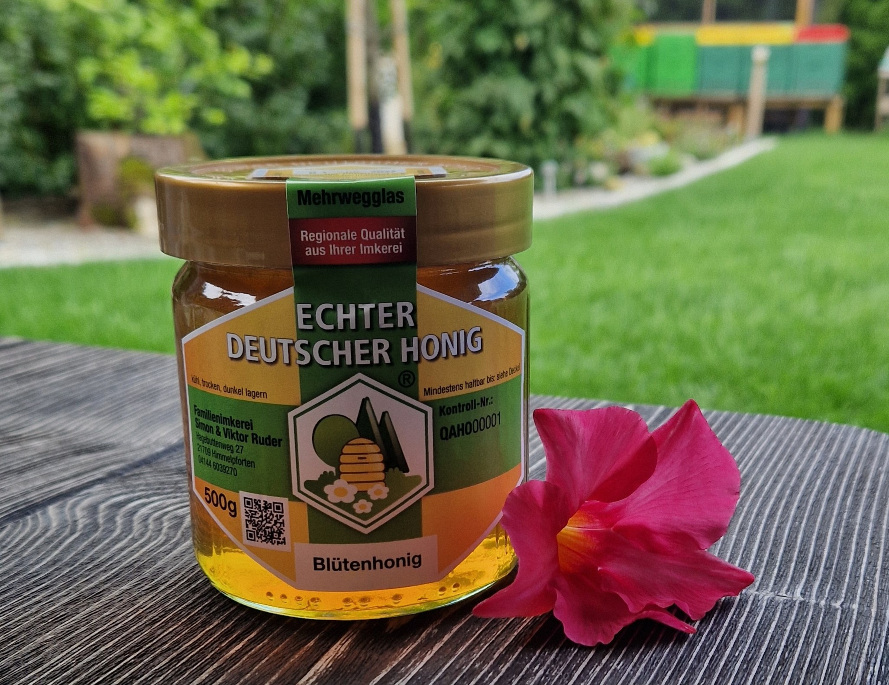

„Vom Himmel geschickt, von Bienen gemacht.“
Erleben Sie den unverfälschten Geschmack der Natur – direkt vom Imker aus dem Christkinddorf Himmelpforten!


Deutscher Qualitäts-Honig – perfekt fürs Frühstücksbrötchen, zum Süßen von Tee oder zum Backen feiner Köstlichkeiten.
Frühtrachthonig stammt aus der ersten Blüte des Jahres – meist von Obstbäumen und Frühjahrsblumen. Er ist oft hell, mild im Geschmack und cremig in der Konsistenz.
Sommertrachthonig hingegen wird später im Jahr geerntet und enthält Nektar von Linden, Waldpflanzen, Beeren und anderen Sommerblühern. Er ist kräftiger im Aroma, dunkler und meist flüssiger.
Beide Sorten spiegeln auf einzigartige Weise die Vielfalt der Natur in ihrer jeweiligen Jahreszeit wider.
Honigwaben entstehen aus Bienenwachs, das die Bienen selbst produzieren. In präziser Sechseck-Form bauen sie damit ihre Waben, in denen sie Honig lagern, Brut aufziehen und Pollen deponieren. In diesen Waben steckt pure Natur – und das macht sie so gesund: Honig aus der Wabe enthält neben dem Nektar auch wertvolle Enzyme, Vitamine und antibakterielle Stoffe. Besonders naturbelassen ist der Wabenhonig, der direkt aus der Wabe gegessen wird – ein echtes Geschmackserlebnis.

Unsere Bienen fliegen durch eine vielfältige, blühende Landschaft: Sie sammeln Nektar und Pollen aus Obstbäumen, wilden Blumen, blühenden Gärten der Nachbarschaft und den zahlreichen Lindenbäumen in der Umgebung. Auch der nahegelegene Wald bietet wertvolle Pflanzen oder verschiedene Waldblüten. Diese bunte Mischung macht unseren Honig so einzigartig.
Wir legen großen Wert auf einen verantwortungsvollen und achtsamen Umgang mit unseren Bienen. Unsere Imkerei arbeitet naturnah und nachhaltig: Wir achten auf artgerechte Haltung, vermeiden chemische Zusätze und respektieren den natürlichen Lebensrhythmus der Völker. Unsere Arbeit fördert nicht nur die Bienen, sondern auch die Artenvielfalt in der Region.
Bienen sind unverzichtbar für unsere Natur. Sie bestäuben rund 80 % aller Nutz- und Wildpflanzen und sichern so unsere Ernten und die Vielfalt der Pflanzenwelt. Ohne Bienen gäbe es kaum Obst, Gemüse oder Blumen. Durch ihren Fleiß tragen sie wesentlich zum ökologischen Gleichgewicht bei. Deshalb ist es so wichtig, sie zu schützen und Lebensräume für sie zu erhalten.
500g im Glas (cremig oder flüssig)– 7€
Wabenhonig
100% naturbelassen - direkt aus der Wabe150g im Schälchen – 5€

Alles begann mit einem Besuch bei Simons Onkel, einem Imker in Bayern. Simon war damals noch in der Grundschule – und vom ersten Moment an tief beeindruckt vom Summen, dem emsigen Treiben und dem geheimnisvollen Leben im Bienenstock. Schon auf der Rückfahrt sagte er begeistert: „Ich möchte Imker werden!“
So reifte in uns die Idee, das Abenteuer Imkerei gemeinsam anzugehen – als Vater und Sohn.
Bei einer Schulung des Kreisimkervereins Stade von 1887 e.V. – im Deutschen Imkerbund e.V. registriert – lernten wir alles über Bienen, ihre Pflege, die Honiggewinnung und die Bedeutung einer verantwortungsvollen Imkerei. Heute dürfen wir unseren Honig stolz unter dem Siegel ‚Echter Deutscher Honig‘ verkaufen.
Inzwischen ist Simon 13 und mit ganzem Herzen Jungimker. Gemeinsam kümmern wir uns um unsere Bienenvölker.
Unsere kleine Imkerei ist für uns mehr als nur ein Hobby – sie ist ein Familienprojekt!